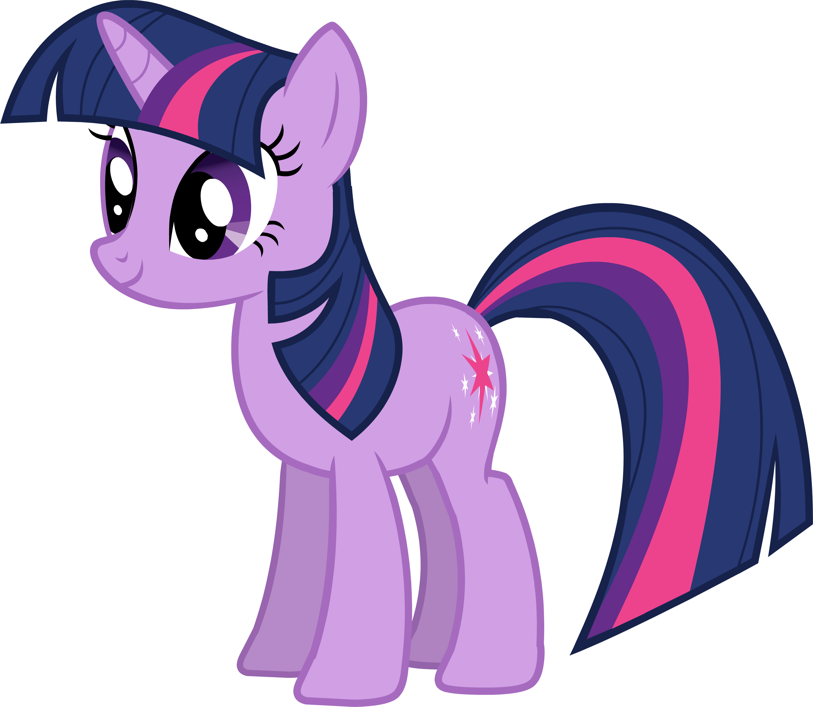
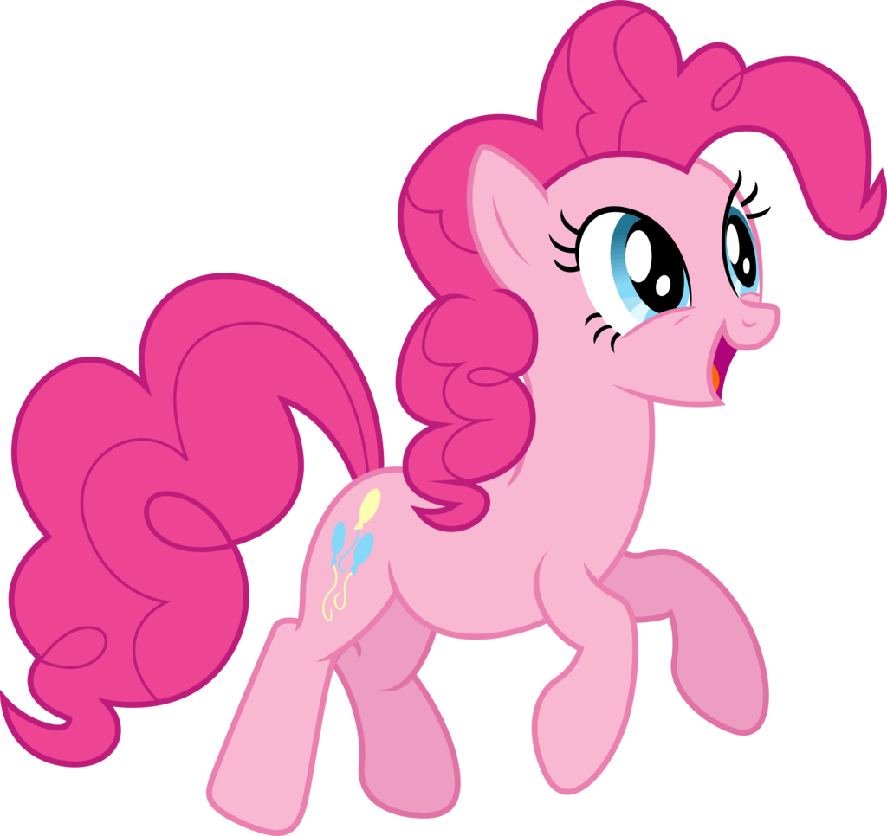
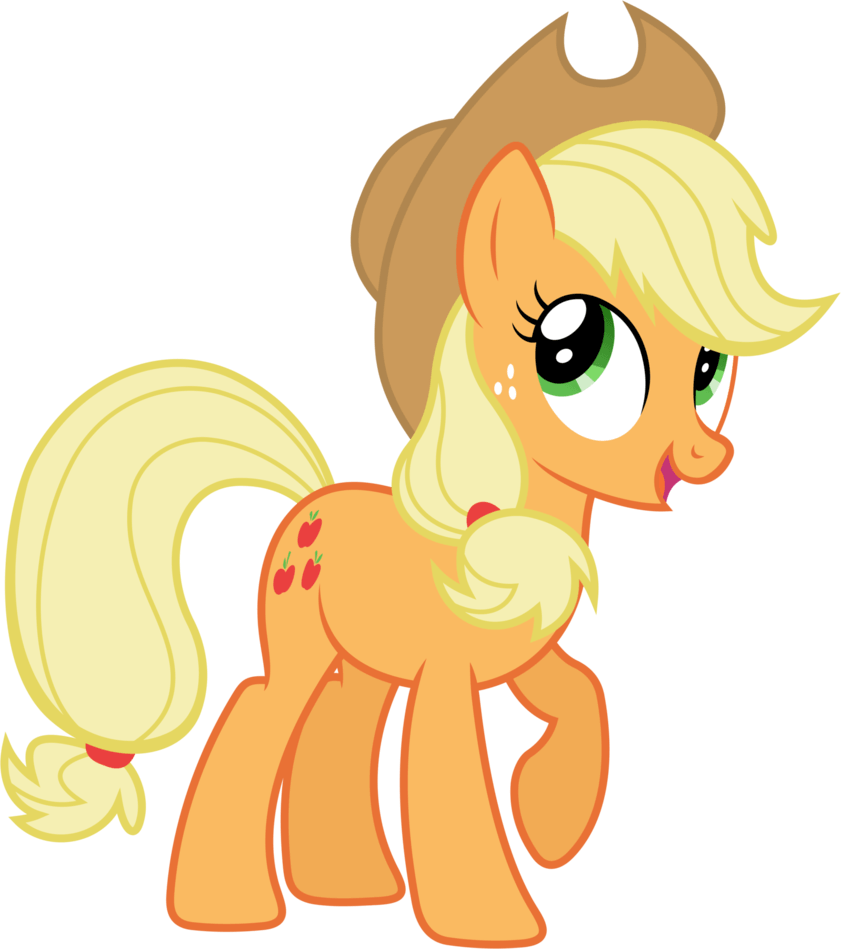
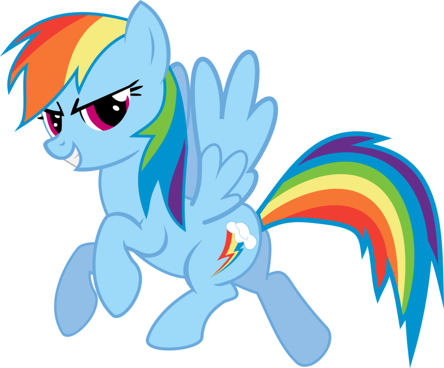
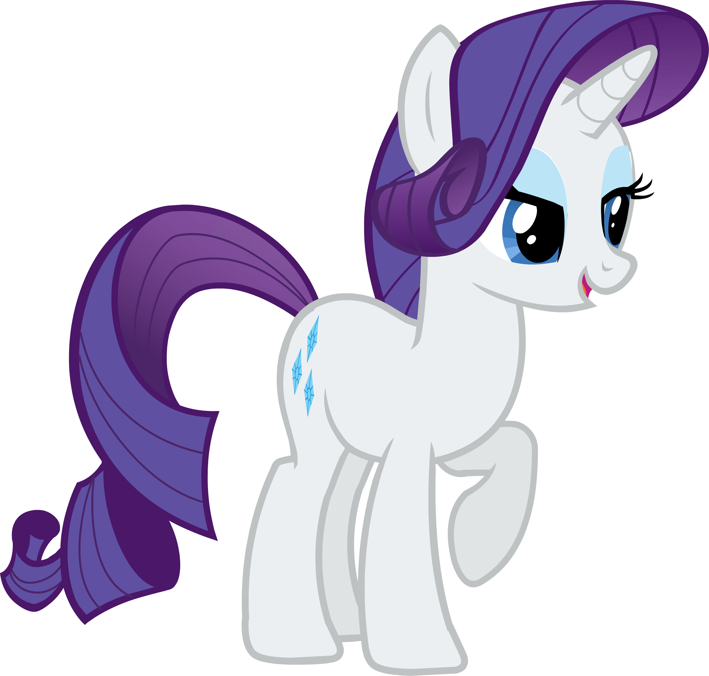

These are the main characters that fans see most in the show. These friends should give you a good idea of what kind of people like the show, and what kind of characters you can hope to meet while watching.
Twilight Sparkle - A studious and intellectual type, this unicorn thought that having friends was unecessary until a live changing experience that taught her the true magic behind friendship.
Pinkie Pie - This energetic and fun loving earth pony (a pony that is neither a unicorn nor pegasus) knows how to make anyone smile. She is always planning parties for people and makes sure that everypony has a friend.
Applejack - An earth pony that tends to the soil and loves putting in a hard day's work. Honesty is her policy, and she is always there to lend a hoof.
Rainbow Dash - This pegasus loves to move fast! Her dream is to join a flying troupe called "The Wonderbolts", and she works very hard towards that goal. Because of her loyal nature however, she always puts friends before dreams.
Rarity - A fashion designer and buisness owner, this unicorn loves making designs for her friends and always has an eye for beauty. With so much talent to give, it's no surprise that she is also very generous.
Fluttershy - Her personality is as soft as she looks. When it comes to caring for animals, this pegasus is your go-to pony. Although she is softspoken, that will never stop her from being kind. She is often seen with her pet bunny, Angel.